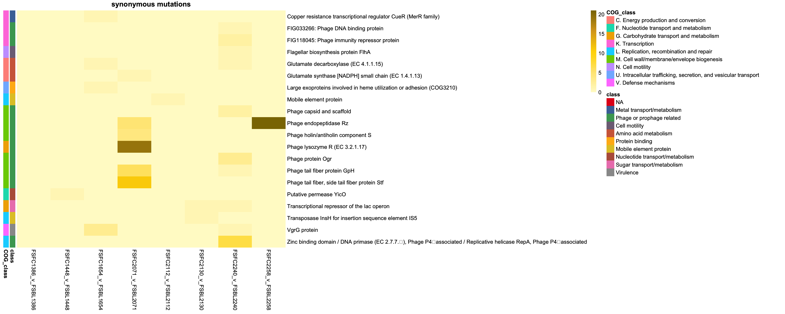
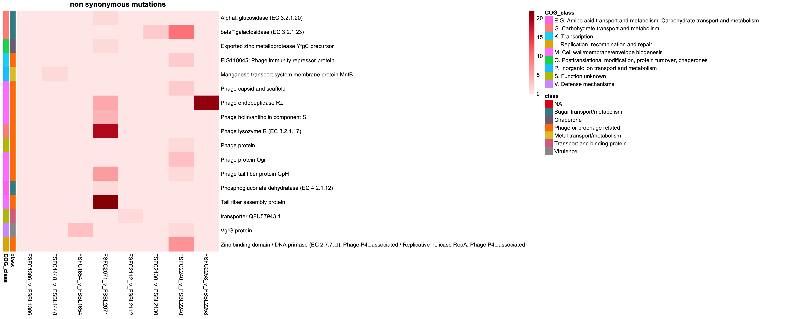
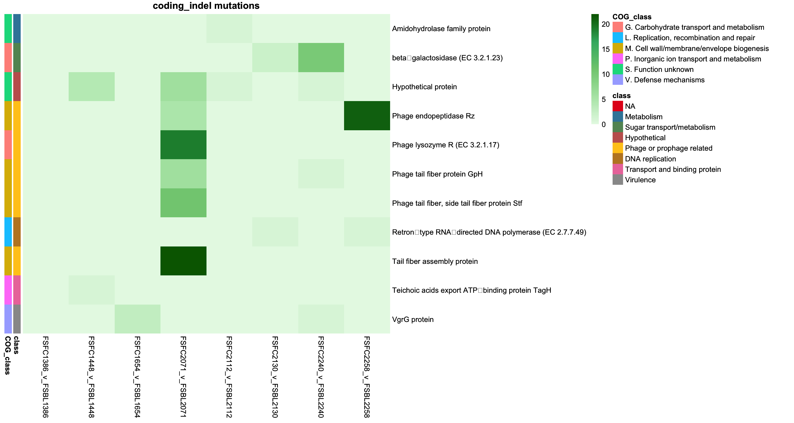
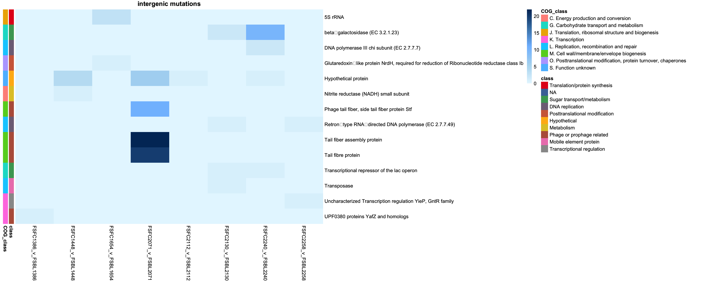

FAS=FSFC1386_hybracter.fasta
NAME=FSFC1386
FOLDER=prokka_annotated
GENUS='Escherichia'
TAG='Gene'
prokka $FAS --outdir $FOLDER --prefix ${NAME}_anno --locustag $TAG --genus $GENUS --addgenes 3: Variant calling heatmaps with breseq
Introduction
This tutorial will show how to visualise the output from variant calling with breseq as heatmaps in R.
Part 1 - Genome download and variant calling with breseq in bash
1.1: Download reads and run assemblies
1.2: Annotate genome assemblies with prokka
In order to get an informative output from breseq it is best to annotate the genome, this can be done with prokka.
1.3: Check files
You should now have the following files which we can use for the tutorial, use ls to check you have these files for this tutorial.
FSFC1386_hybracter.gbkFSBL1386_long.fastq
1.4: Run Breseq on genbank files
Make sure you have breseq downloaded see the breseq Github page for more information.
mkdir breseq/FS2071
REF=prokka_annotated/FSFC1386.gbk
LR=long_reads/FSBL1386_long.fastq
OUT=breseq/FS1386
breseq -r $REF -x $LR -o $OUT After all the breseq annotations are done we can compile them together into one table.
Part 2 - Plotting variant calling heatmaps in R
2.1: Import the data
Import the data from breseq - this is the compiled table of all breseq outputs from all our highly related pairs.
# Load necessary libraries
library(dplyr)
library(stringr)
library(readxl)
library(pheatmap)
library(dplyr)
library(tidyr)
library(tibble)
library(RColorBrewer)
library(ggplot2)
# Load the data (adjust the path to your file location)
file_path = "data/paired_blood_faecal_breseq_comparisons_for_R.xlsx"
data = read_excel(file_path)2.2: Wrangle dataset
# Extract relevant columns
class_df = data %>% select(isolate = `isolate`,
description = `description`,
annotation = `annotation`,
class = `class`,
COG_class = `COG_class`)
# Remove rows where isolate is "FSFC2155_v_FSBL2155"
class_df = class_df %>% filter(isolate != "FSFC2155_v_FSBL2155")
# Drop rows with missing values in the isolate or description columns
class_df = class_df %>% filter(!is.na(isolate) & !is.na(description))
# Check for "intergenic" in the annotation column and create a new column
class_df = class_df %>%
mutate(context = ifelse(grepl("intergenic", annotation, ignore.case = TRUE), "Intergenic", "Coding sequence"))
# Add a new column for mutation type
class_df = class_df %>%
mutate(mutation_type = case_when(
str_detect(annotation, "^intergenic") ~ "intergenic", # If it starts with "intergenic", label as intergenic
str_detect(annotation, "^coding") ~ "coding_indel", # If it starts with "coding", label as coding
str_detect(annotation, "^[A-Z](\\d+)[A-Z*]") ~ ifelse(
str_sub(annotation, 1, 1) == str_sub(annotation, nchar(str_extract(annotation, "^[A-Z](\\d+)[A-Z*]")), nchar(str_extract(annotation, "^[A-Z](\\d+)[A-Z*]"))),
"synonymous",
"non-synonymous"
),
TRUE ~ NA_character_
))
# Print result
head(class_df)# A tibble: 6 × 7
isolate description annotation class COG_class context mutation_type
<chr> <chr> <chr> <chr> <chr> <chr> <chr>
1 FSFC1386_v_FSBL1… UPF0380 pr… intergeni… Phag… K. Trans… Interg… intergenic
2 FSFC2071_v_FSBL2… Alpha‑gluc… D122Y (GA… Suga… G. Carbo… Coding… non-synonymo…
3 FSFC2071_v_FSBL2… Glutamate … P326P (CC… Amin… C. Energ… Coding… synonymous
4 FSFC2071_v_FSBL2… Exported z… R238C (CG… Chap… O. Postt… Coding… non-synonymo…
5 FSFC2071_v_FSBL2… Phage holi… L10L (TTA… Phag… M. Cell … Coding… synonymous
6 FSFC2071_v_FSBL2… Phage holi… W56* (TGG… Phag… M. Cell … Coding… non-synonymo…head(class_df$mutation_type)[1] "intergenic" "non-synonymous" "synonymous" "non-synonymous"
[5] "synonymous" "non-synonymous"# Create the pivot table
class_pivot = table(class_df$isolate, class_df$description)
class_pivot = as.data.frame.matrix(class_pivot)
# Create annotation data frame for intergenic and class information
annotation_df = class_df %>%
select(description, context, class, COG_class, mutation_type) %>%
distinct() Next we will select the mutations based on synonymous/non-synonymous
# synonymous/non-synonymous mutation selection
unique(annotation_df$mutation_type)[1] "intergenic" "non-synonymous" "synonymous" "coding_indel" annotation_df_synon = annotation_df %>% filter(mutation_type == "synonymous")
annotation_df_non_synon = annotation_df %>% filter(mutation_type == "non-synonymous")
annotation_df_intergenic = annotation_df %>% filter(mutation_type == "intergenic")
annotation_df_coding_indel = annotation_df %>% filter(mutation_type == "coding_indel")2.3: Plotting variants as heatmaps with pheatmap
2.3.1 Plotting synonymous mutations
genes_synon = intersect(colnames(class_pivot), annotation_df_synon$description)
class_pivot_synon = class_pivot %>% select(all_of(genes_synon))
annotation_df_synon = annotation_df_synon %>%
column_to_rownames("description")
# Ensure the annotation rows are in the same order as the matrix rows
annotation_df_synon = annotation_df_synon[colnames(class_pivot), , drop = FALSE]
# remove context as redudnant
annotation_df_synon = annotation_df_synon %>% select(-context, -mutation_type)
# Define annotation colors
annotation_colors = list(
context = c("Intergenic" = "red", "Coding sequence" = "blue"),
class = setNames(colorRampPalette(brewer.pal(9, "Set1"))(length(unique(annotation_df_synon$class))), unique(annotation_df_synon$class))
)
# Yellow gradient
yellow_colors = colorRampPalette(c("#FFFACD", "#FFE680", "#FFD700", "#DAA520", "#8B7500"))(100)
# Transpose the pivot table
class_pivot_synon_t = t(class_pivot_synon)
synon_p = pheatmap(class_pivot_synon_t,
cluster_rows = FALSE,
cluster_cols = FALSE,
display_numbers = FALSE,
main = "synonymous mutations",
fontsize_number = 8,
color = yellow_colors,
border_color = "black",
annotation_row = annotation_df_synon,
annotation_colors = annotation_colors)
synon_p
2.3.2 Plotting non synonymous mutations
genes_non_synon = intersect(colnames(class_pivot), annotation_df_non_synon$description)
class_pivot_non_synon = class_pivot %>% select(all_of(genes_non_synon))
annotation_df_non_synon = annotation_df_non_synon %>%
column_to_rownames("description")
# Ensure the annotation rows are in the same order as the matrix rows
annotation_df_non_synon = annotation_df_non_synon[colnames(class_pivot), , drop = FALSE]
# remove context as redudnant
annotation_df_non_synon = annotation_df_non_synon %>% select(-context, -mutation_type)
# Define annotation colors
annotation_colors = list(
context = c("Intergenic" = "red", "Coding sequence" = "blue"),
class = setNames(colorRampPalette(brewer.pal(9, "Set1"))(length(unique(annotation_df_non_synon$class))), unique(annotation_df_non_synon$class))
)
# Red gradient
red_colors = colorRampPalette(c("#FFEBEB", "#FFB3B3", "#FF8080", "#E63946", "#990000"))(100)
non_synon_cols = brewer.pal(9, "YlOrRd")
cols = brewer.pal(9, "YlOrRd")
# Transpose the pivot table
class_pivot_non_synon_t = t(class_pivot_non_synon)
non_synon_p = pheatmap(class_pivot_non_synon_t,
cluster_rows = FALSE,
cluster_cols = FALSE,
display_numbers = FALSE,
main = "non synonymous mutations",
fontsize_number = 8,
color = red_colors,
border_color = "black",
annotation_row = annotation_df_non_synon,
annotation_colors = annotation_colors)
non_synon_p
2.3.3 Plotting coding INDELs
genes_coding_indel = intersect(colnames(class_pivot), annotation_df_coding_indel$description)
class_pivot_coding_indel = class_pivot %>% select(all_of(genes_coding_indel))
annotation_df_coding_indel = annotation_df_coding_indel %>%
column_to_rownames("description")
# Ensure the annotation rows are in the same order as the matrix rows
annotation_df_coding_indel = annotation_df_coding_indel[colnames(class_pivot), , drop = FALSE]
# remove context as redudnant
annotation_df_coding_indel = annotation_df_coding_indel %>% select(-context, -mutation_type)
# Define annotation colors
annotation_colors = list(
context = c("coding_indel" = "red", "Coding sequence" = "blue"),
class = setNames(colorRampPalette(brewer.pal(9, "Set1"))(length(unique(annotation_df_coding_indel$class))), unique(annotation_df_coding_indel$class))
)
coding_indel_cols = brewer.pal(9, "YlOrRd")
# Green gradient
green_colors = colorRampPalette(c("#E6F9E6", "#B3E6B3", "#80CC80", "#3CB371", "#006400"))(100)
coding_indel_cols = brewer.pal(9, "YlOrRd")
cols = brewer.pal(9, "YlOrRd")
# Transpose the pivot table
class_pivot_coding_indel_t = t(class_pivot_coding_indel)
coding_indel_p = pheatmap(class_pivot_coding_indel_t,
cluster_rows = FALSE,
cluster_cols = FALSE,
display_numbers = FALSE,
main = "coding_indel mutations",
fontsize_number = 8,
color = green_colors,
border_color = "black",
annotation_row = annotation_df_coding_indel,
annotation_colors = annotation_colors)
coding_indel_p
2.3.3 Plotting intergenic mutations
genes_intergenic = intersect(colnames(class_pivot), annotation_df_intergenic$description)
class_pivot_intergenic = class_pivot %>% select(all_of(genes_intergenic))
annotation_df_intergenic = annotation_df_intergenic %>%
column_to_rownames("description")
# Ensure the annotation rows are in the same order as the matrix rows
annotation_df_intergenic = annotation_df_intergenic[colnames(class_pivot), , drop = FALSE]
# remove context as redudnant
annotation_df_intergenic = annotation_df_intergenic %>% select(-context, -mutation_type)
# Define annotation colors
annotation_colors = list(
context = c("Intergenic" = "red", "Coding sequence" = "blue"),
class = setNames(colorRampPalette(brewer.pal(9, "Set1"))(length(unique(annotation_df_intergenic$class))), unique(annotation_df_intergenic$class))
)
intergenic_cols = brewer.pal(9, "YlOrRd")
# Blue gradient
blue_colors = colorRampPalette(c("#E6F7FF", "#B3DAF1", "#80BFFF", "#4682B4", "#003366"))(100)
intergenic_cols = brewer.pal(9, "YlOrRd")
cols = brewer.pal(9, "YlOrRd")
# Transpose the pivot table
class_pivot_intergenic_t = t(class_pivot_intergenic)
intergenic_p = pheatmap(class_pivot_intergenic_t,
cluster_rows = FALSE,
cluster_cols = FALSE,
display_numbers = FALSE,
main = "intergenic mutations",
fontsize_number = 8,
color = blue_colors,
border_color = "black",
annotation_row = annotation_df_intergenic,
annotation_colors = annotation_colors)
intergenic_p